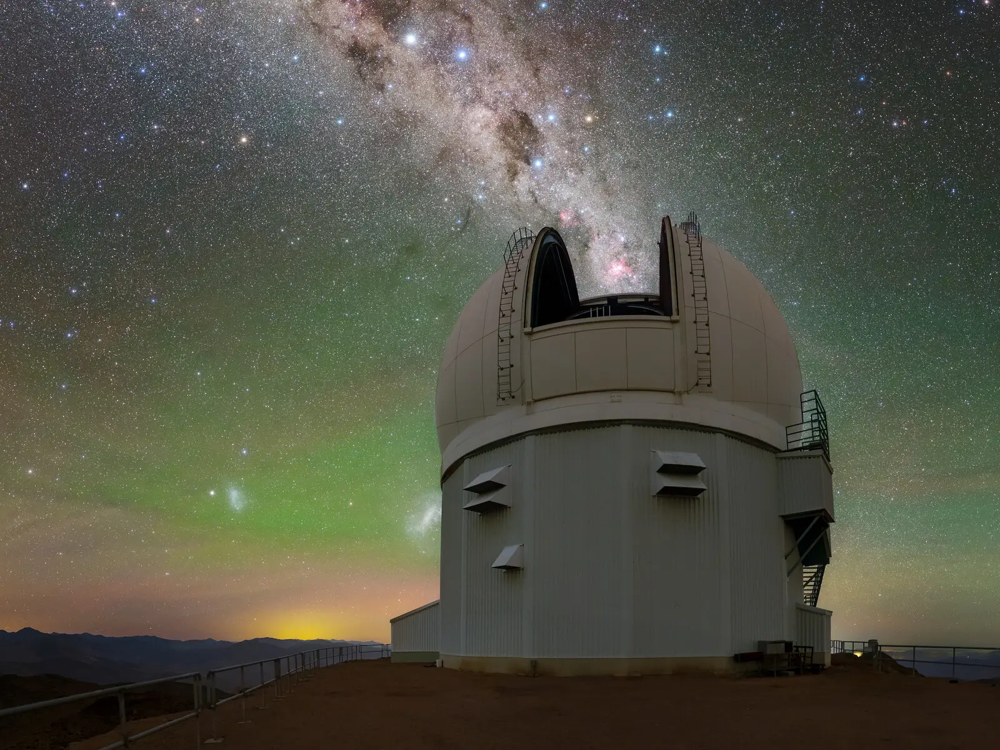
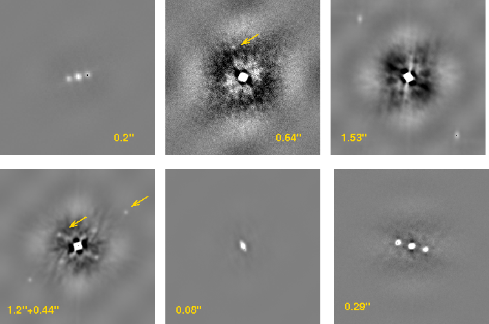
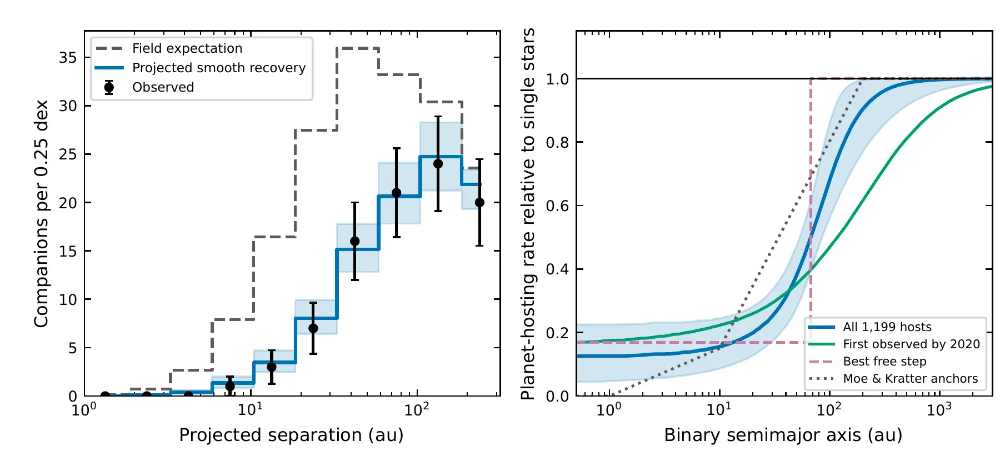
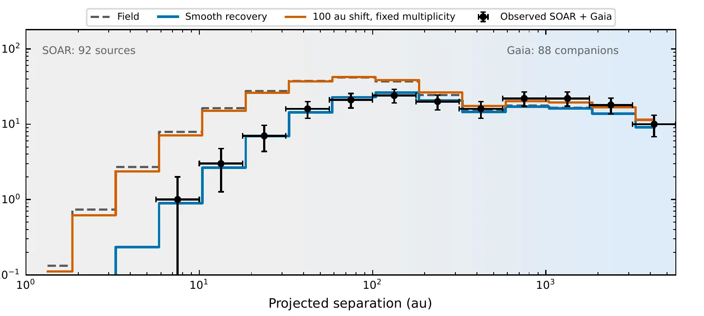

only about three in ten of the companions expected around typical stars
2,982unique TIC targets observed in the cumulative HRCam survey
729latest-epoch component detections around 688 host stars
~0.04″diffraction-limited resolution delivered by the 4.1-m telescope
630systems with a source inside 3″ and a primary-host dilution correction
The survey idea
Twenty-one arcsecond pixels meet a four-meter telescope.
TESS watches nearly the whole sky with 21″ pixels, ideal for discovering transits around bright nearby stars but large enough to blend many sources together. SOAR’s High-Resolution Camera, HRCam, resolves companions tens to hundreds of times closer than a single TESS pixel can distinguish.

Why speckle imaging?
Explore HRCam at SOAR ↗
Freeze the atmosphere, then recover the diffraction limit.
Each target is recorded in hundreds of very short exposures. Atmospheric turbulence rearranges the speckles from frame to frame, but the binary-star signal persists. Combining the frames in Fourier space recovers separations, position angles, and brightness contrasts far below ordinary seeing.
800short exposures in two data cubes for a typical survey observation
11 sapproximate acquisition time for the science frames
I bandvisible-light observations centered near 824 nm, close to the TESS passband
What a detection looks like
A companion leaves two symmetric fingerprints.
In a speckle autocorrelation function, the target star produces the bright central peak. A companion creates a pair of mirrored peaks at the measured separation and position angle. This symmetry is a mathematical feature of the method—the companion itself appears only once on the sky.
The first TESS follow-up night at SOAR ↗
Interactive · speckle autocorrelation
Move a hidden companion through the data.
Change the separation, position angle, and contrast, then switch between the blurred seeing-limited image and the final autocorrelation. The ACF reveals the companion as two mirrored peaks, as in the real HRCam mosaic above. The texture and sensitivity are illustrative; the geometry and magnitude-to-flux conversion are quantitative.
1 TESS pixel · 21″
Every star adds measured light
First, set the scale
One TESS pixel contains a great deal of sky.
A TESS pixel is 21″ on a side. The 2.8″ autocorrelation field used below is 7.5 times narrower and covers only about 1.8% as much sky area. Within that small patch, SOAR reaches roughly 0.04″ resolution.
Every additional star whose light falls into the target’s TESS pixel or photometric aperture adds flux to the light curve. That extra light dilutes the fractional brightness drop: the observed transit becomes shallower, so—without a correction—the planet appears smaller than it really is.
extra stellar light→shallower transit→planet appears smaller
21″one TESS pixel
7.5×narrower HRCam frame
~56×less sky area
Tentative SOAR TESS III result: for 630 systems with a source inside 3″, the median primary-host planet-radius correction is ×1.070; the 90th-percentile correction is ×1.326.
The grid subdivides the TESS pixel into 2.8″ comparison fields; those grid cells are not additional TESS detector pixels.
Illustrative ACF2.8″ × 2.8″
Binary parameters
The autocorrelation reveals the companion as a symmetric pair of peaks.
90 AUprojected separation at 200 pc
15.8%companion-to-primary flux ratio
Clear pairillustrative ACF visibility
Real detections are tested against the measured 5σ contrast curve for each observation and modeled in the power spectrum; this visual is an explanatory simulation, not a detection classifier.
Tentative results from SOAR TESS III
Planets are simply found much less often in close binary systems.
The clearest result is straightforward: stars with TESS planet candidates have far fewer close stellar companions than ordinary stars. By a few hundred AU, their companion population begins to look much more typical.
still only about one-third of the ordinary stellar rate
the companion population is beginning to look more typical
no evidence that the missing close companions simply piled up farther out
Percentages compare the observed companion population with what the survey would have detected around an equivalent sample of ordinary field stars. These results are tentative until SOAR TESS Survey III completes peer review.
Field expectation100%
TOI hosts34%
Upcoming SOAR TESS III result
50 AUbinary semimajor axis
Close binaries are uncommon here. At 50 AU, planet-candidate hosts have only about one-third as many companions as comparable ordinary stars.
The tentative smooth model has an inner level S₀ = 0.128 and reaches halfway back to the ordinary stellar rate near 106 AU. This is a gradual, model-dependent transition—not a sharp boundary where planets suddenly become common.
01 · Inside 50 AU
3.5×
Planets are found much less often in very close binaries.
Only 24 close companions were seen where about 85 would be expected around typical stars. Put plainly, stars with TESS planet candidates are rarely members of binaries this tight.
02 · Inside 100 AU
2.8×
The shortage remains strong out to roughly the size of the Solar System.
Inside 100 AU, the survey found 48 companions instead of the roughly 134 expected. Close stellar companionship appears to make detectable planetary systems much less common.
03 · Farther apart
74%
Farther apart, planet-hosting binaries start to look more ordinary.
Between 100 and 300 AU, the survey found about three-quarters of the normal companion rate. The effect fades gradually as the two stars move farther apart.
04 · A gradual return

05 · The wider picture

06 · No outer pileup
No pileup
Planet-hosting binaries are not unusually common at wider orbits.
If close binaries had simply moved outward, the survey should find a large excess near 100 AU. It does not. The wide companions look broadly similar to those around typical stars.
07 · What this could mean
17.8%
fewer planetary systems may form or survive because of close companions.
Within the companion range measured directly, the model suggests close binaries remove about 18% of potential planet-hosting environments in a volume-limited population. This is a tentative population estimate, not a direct count of missing TESS planets.
08 · Blended starlight
×1.070
Nearby stars can make a planet look smaller than it really is.
Extra starlight makes a transit look too shallow. Correcting that blend increases the typical inferred planet radius by 7%; for one in ten affected systems, the correction is more than 32%.
09 · Possible triple systems
7
Some apparent binaries may actually hide a third star.
Gaia detected unusual velocity changes in seven wide systems that were not flagged by its usual image-motion test. The distant imaged companion cannot cause those rapid changes, so an unseen inner companion may be present.
10 · M-dwarf check
The same basic pattern appears around small red stars.
Among 89 M-dwarf planet-candidate hosts, SOAR found only two close companions where roughly 17 were expected. The sample is small, but it points in the same direction.
The survey series
From the first 542 hosts to a 2,982-target census.
Papers I and II established the survey and its first population result. The upcoming third paper combines every HRCam epoch into one census, measures how the close-binary shortage fades with separation, and uses Gaia to test whether the missing close systems were simply redistributed outward.
I2020
542 TESS hosts · 117 companion systems
SOAR TESS Survey. I: Sculpting of TESS planetary systems by stellar companions
The opening paper measured companions, supplied planet-radius corrections for blended systems, and found an initial deficit of close binaries together with an apparent wide-companion enhancement that motivated deeper scrutiny.
II2021
589 new TESS hosts · combined population analysis
SOAR TESS Survey. II: The impact of stellar companions on planetary populations
The second paper added 589 targets and 89 companion systems, then used the combined survey to measure nearly factor-of-seven suppression in close solar-type binaries, test the result for M dwarfs, and trace the wide-binary excess to false-positive contamination.
III2026
2,982 unique TIC targets · 431 post-Paper-II measurements
SOAR TESS Survey. III: The Cumulative Companion Census and Close-Binary Demographics of TESS Objects of Interest
The upcoming draft reports 729 latest-epoch source detections around 688 hosts. Its tentative results show that TESS planet candidates are rarely found in close binaries, that the companion population begins returning toward normal near 100 AU, and that the missing close systems do not simply reappear at wider separations.
Explore the tentative results ↑Upcoming draft · tentative results
The collaboration
Speckle imaging, stellar astrophysics, and exoplanet demographics.
The survey brings together expertise in high-angular-resolution observations, instrument performance, stellar multiplicity, planetary-system characterization, and statistical population analysis.
Carl Ziegler
Survey leadership, companion analysis, and planetary-population interpretation.
Andrei Tokovinin
HRCam instrumentation, speckle observations, and binary-star measurement.
César Briceño
SOAR collaboration, stellar astrophysics, and southern-sky observing.
Nicholas M. Law
High-angular-resolution exoplanet surveys and survey-scale analysis.
Andrew W. Mann
Host-star characterization, exoplanet demographics, and population inference.